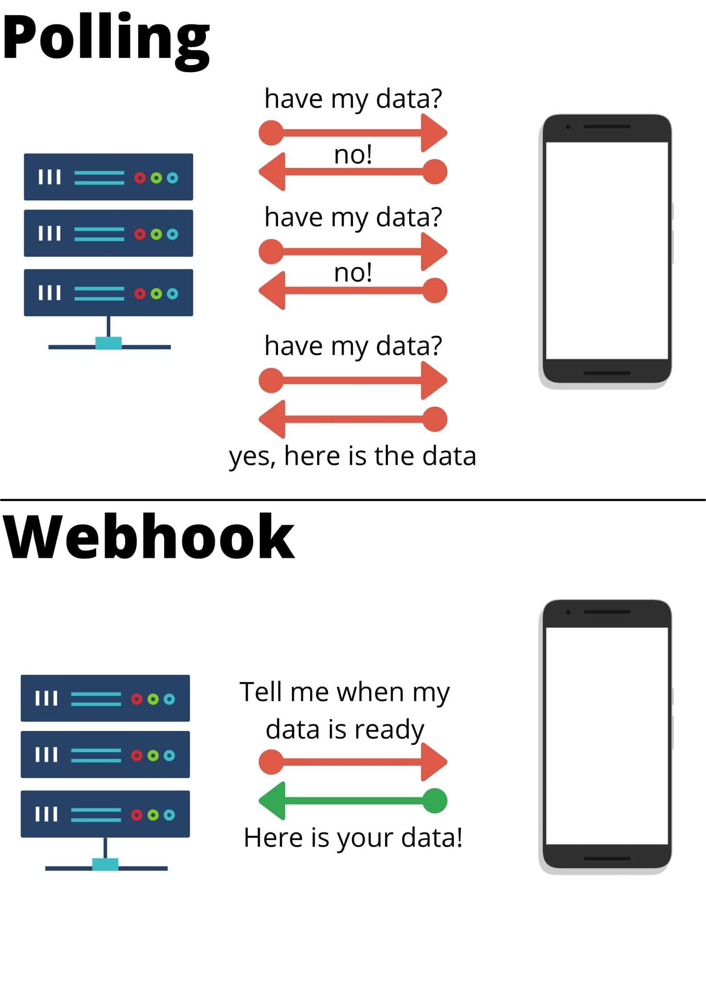
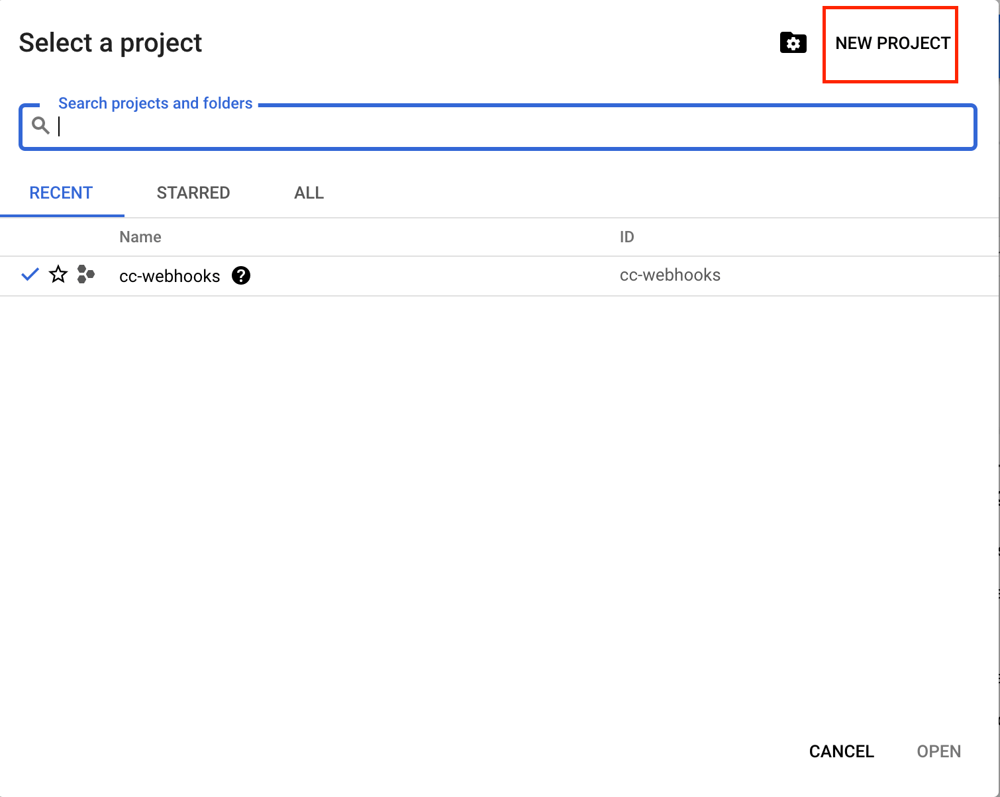

Complete Guide To Building A Webhook In Python
And Host It On Google Cloud Function


Introduction
Webhooks are insanely useful! They have been growing in popularity over the past few years. They are a way for an application to send information to another application, much like communicating between apps. I know that this sounds abstract so in this article I will be sharing more about what webhooks are, how to build them and where to host them. Let's jump right in!
Content Page
What are webhooks and their uses

You as the data engineer for the weather company
What better way to explain the usefulness of webhooks than with an example. Imagine you are a Data Engineer and you built this database of weather information. The data is (legally) scraped from a few websites and appended to your database daily. As this database is crucial to your company’s function, you want to ensure that the daily weather data is updated without fail.
Of course, one way to verify the web-scraping script execution is to fire up your database manager, navigate to the exact table and check the number of rows in the database. How troublesome it is to repeat the same process everyday!
Webhooks are a more hand-free way to go about ensuring the data is being collected everyday. At the end of the web scraping script, add a webhook function that sends a notification to your Slack channel, indicating that the web-scraping is completed. Now just sit back, relax and let the notifications flow in. If no message is sent to the channel, you would know that the script didn't run properly and the weather database is not updated. Time to investigate!
On the more theoretical side of things, webhooks are a way for an application to provide other applications with real-time information. Through an event trigger, a webhook immediately delivers data to the target application, meaning the target app gets notified in real time.
When I first heard of webhooks, I wondered about the difference between webhooks and Application Programming Interface (API)s. On one level, they seem to do similar things -- facilitate information transfer between 2 apps.

The difference between webhook and polling
On a more detailed level, APIs function by requesting data to a server and in turn receive a response (polling). There are many APIs available for free such as Onemap API that gives you data about locations in Singapore. On the other hand, webhooks are much more resource savvy as the server is doing the updating and sending information to the client instead when there is an update or when the event condition is fulfilled. No requesting for data is needed.
As mentioned above, the uses of webhooks revolve around sending data to apps. Returning to our previous example, whenever new data is added to the database (the trigger), a slack message is sent to you (the event). Taking this automation step further, we can change the event to allow for a cascade of functions to happen. Instead of sending a slack message, we can configure the webhook to send data to our business intelligence tool to generate an updated dashboard of weather trends and send a mobile notification to all our users about the latest weather forecast. The best part is that everything is automated, no human intervention at all!
What we are going to build in this blog post
In the subsequent parts of this blog post, I will be sharing more about how I built a Github webhook that sends notifications to Telegram chat via a telebot using Google Cloud Functions. Of course, this is a basic webhook function but it sets the foundation to build any webhook you want!
Building a webhook endpoint in Python
I think of the endpoint as a sort of the medium between the 2 applications that are interacting. The server sends a webhook, the endpoint receives it, parses the data and in turn executes the event.
Here is the full code of the endpoint that I used for testing on my local. Do note we need to make minor edits to the code before transferring it to the console in Cloud Functions. This webhook endpoint aims to send a notification to my telegram chat (event) when someone stars my Github repository or when someone makes a pull request (trigger).
from flask import Flask, request
import requests
app = Flask(__name__)
@app.route("/webhook", methods=["POST"])
def webHook():
body = request.get_json()
event = request.headers.get("X-Github-Event")
if event == "star": # check if the event is a star
nos_stars = body["repository"]["stargazers_count"]
starrer_username = body["sender"]["login"]
repo_url = body["repository"]["html_url"]
repo_name = body["repository"]["name"]
message = "{} has starred the [{}]({}). \n\n The Total Stars are {}".format(starrer_username, repo_name, repo_url, nos_stars)
sendTeleMessage(message)
elif event == "pull_request": # check if event is a pull request
pr_number = body["number"]
pr_title = body["pull_request"]["title"]
pr_desc = body["pull_request"]["body"]
pr_login = body["sender"]["login"]
pr_login_url = body["sender"]["html_url"]
pr_url = body["pull_request"]["html_url"]
message = "Pull Request([{}]({})) {} by ({}).\n\n Title: {} \n\n Description: {}".format(pr_number, pr_url, pr_login, pr_login_url, pr_title, pr_desc)
sendTeleMessage(message)
def sendTeleMessage(message):
tg_msg = {"chat_id": "", "text": message, "parse_mode": "Markdown"}
API_URL = "https://api.telegram.org/bot/sendMessage"
requests.post(API_URL, data=tg_msg)
if __name__ == "__main__":
app.run(debug=True, port=5000)
Alright, let’s break down the code section by section.
from flask import Flask, request
import requests
We are importing the necessary 3rd party packages, flask and requests. Flask is a package that allows us to build web applications while requests is a HTTP library that makes sending HTTP requests over the web simple.
app = Flask(__name__)
We are creating an instance of an application by passing “__name__” as an argument. Python sets the “__name__” variable to the script name. Don’t worry too much about fully understanding this part, it is not crucial for building the webhook.
@app.route("/webhook", methods=["POST"])
def webHook():
body = request.get_json()
event = request.headers.get("X-Github-Event")
if event == "star": # check if the event is a star
nos_stars = body["repository"]["stargazers_count"]
starrer_username = body["sender"]["login"]
repo_url = body["repository"]["html_url"]
repo_name = body["repository"]["name"]
message = "{} has starred the [{}]({}). \n\n The Total Stars are {}".format(starrer_username, repo_name, repo_url, nos_stars)
The first line with the @ is a decorator that is used to modify the function below it. You can think of decorators as a wrapper that extends the functionality of a function or class without permanently modifying it. In essence, it is passing a function (webHook) into another function (app.route). If you want to find out more about decorators, check out this article.
Next, we have the function declaration webHook(). “get_json()” is a method from the flask module which parses the incoming data as JSON; if data is not “application/json” type, the method returns None.
Then we grab the event with the “.get()” method from the request header (FYI this is different from the response header). Subsequently, we traverse the JSON body and assemble the data that we want such as the name of the repository and the number of times the repo was starred. Lastly, we string all the variables together to create the message we would like to send to our telegram chat. Do note that you can look through the response body by printing it as a python dictionary with “json.loads({request body})” and choosing the data you would like to be in your message, you don’t have to follow this code strictly.
elif event == "pull_request": # check if event is a pull request
pr_number = body["number"]
pr_title = body["pull_request"]["title"]
pr_desc = body["pull_request"]["body"]
pr_login = body["sender"]["login"]
pr_login_url = body["sender"]["html_url"]
pr_url = body["pull_request"]["html_url"]
message = "Pull Request([{}]({})) {} by ({}).\n\n Title: {} \n\n Description: {}".format(pr_number, pr_url, pr_login, pr_login_url, pr_title, pr_desc)
The logic for this elif block is similar to the if block above. Basically, if the event is not starring the repo but creating a pull request, organise the necessary data from the JSON post body and format it into a message.
sendTeleMessage(message)
At the end of the 2 conditional blocks, you would have noticed this function. Its purpose is to send the message we created to the telegram chat.
def sendTeleMessage(message):
tg_msg = {"chat_id": "", "text": message, "parse_mode": "Markdown"}
API_URL = "https://api.telegram.org/bot/sendMessage"
requests.post(API_URL, data=tg_msg)
We are defining the function here. In brief, we are sending a HTTP Post request to the telegram server using a url we created. In order to get your chat id, you have to first send a message to your telebot and print out the json response to locate your unique chat id. Your tele token must also be obtained from BotFather when you create the bot. If this seems all too foreign, do breeze through this other post I wrote about telegram bots. It covers everything you need to know about creating a telebot.
if __name__ == "__main__":
app.run(debug=True, port=5000)
Finally, we come to the last part of the script. Using the “.run()” method, we get our application up and running. In the terminal, by executing the command ‘python webhook.py run’, a message directing you to a local port would appear in your terminal, something like this
http://127.0.0.1:5000/
You can think of this as the place your webhook is waiting to receive the post request. Don’t forget to add “/webhook” at the end of the url. Now, since this is in our local, Github notifications will not be able to reach this url. One way to overcome this problem is by downloading ngrok. ngrok exposes our local development server to the Internet by creating a tunnel. ngrok is used for testing purposes and if you want to read more about it, you can check out this article. As this code already runs smoothly, this step isn’t necessary for us.
Google Cloud Functions
PHEW! We are finally done with the script and you must be wondering, where is the url that the trigger sends to post the data. Well, this is where Google Cloud Platform (GCP) comes in. We are going to host the code on the cloud and it will generate a url for the trigger to send data to.
Create a GCP account with your google account and click on the “console” button. Google will ask for your credit/debit card account, but don’t worry, you don’t have to pay a cent. GCP has $300 worth of free credit and Cloud Function allows for 2 million free requests per month (at least at the time of writing this article, please do check the latest regulations). But even if somehow you exceed that 2 million requests in a month AND use up that $300 credit (you a hardcore cucumber), subsequent requests are charged at a per-unit rate of $0.0000004 per invocation. TLDR, it's almost free to use GCP Cloud Function.
It might seem intimidating at first with so many features but we will just be focusing on the Cloud Function feature.
Creating a new project in GCP
Before that you have to create a project, name it whatever you like but you can’t alter it later. Ignore the organisation, unless you are creating a webhook for your company that already has existing projects.
GCP side navigation bar
Next at the home page, click on the hamburger navigation icon on the top left and locate the Cloud Function.
GCP Cloud Function Overview panel
Click on the Create Function button.
GCP create function panel
Name your function and select a location of the server, preferably somewhere near to your country of residence. Click on the radio button “allow unauthenticated invocation”, click “save” and then the “next” button.
GCP Function inline editor
First, under the “runtime” select your python version or the language you built your webhook in. Next copy and paste the code we wrote above in the Inline Editor, replacing the example hello_world function.
Secondly, add the argument “request” as a parameter in the webHook() function. This is a requirement of a cloud function to take in a request param.
@app.route("/webhook", methods=["POST"])
def webHook(request):
body = request.get_json()
You might have noticed that since the hello_world() function is replace with the webHook() function, we also need to change the Entry point.
Thirdly, in Requirements.txt, we must specify the version of the 3rd party modules that we imported so that GCP knows which version to download and thus use. We do not need to include any standard library packages in Requirements.txt. Paste this code below for our script.
Flask == 2.0.1
requests == 2.25.1
In the future, if you want to add more packages to your Cloud Function, you can find out the latest version of the package from this Python Package Index website.
Finally, click on the “deploy” button and let the function load. If a green tick appears next to the function, it means that the deployment was successful and that there are no errors with the code.
I cannot stress this enough -- remember to test your code out in your local before deploying it on GCP as if there are any errors with the script, the script will revert back to the last working version. This would mean that all the changes you made to your code on the GCP Inline Editor will be gone. For safety, do double check that you have done the 3 steps I mentioned above, as those are steps that usually slip our minds.
GCP function logging panel
When you click into the function, you can see a dashboard of invocation seconds, memory utilisation of the function. Click on the logs tab and you can find out more about the error that occurred. I know there are a lot of tiny words and it is a pain to read them, but just find the last few lines of the log and that is probably the error.
On the “trigger” tab, you will find your treasure! That is, lo and behold, the url that the HTTP Post request will send to.
Creating Github webhook
Github settings panel
Another PHEW! This is our final step, actually creating the webhook. Go to your github repo, click on “Settings” and then the “Webhooks” at the left menu panel. Then click on the “add webhook” button.
Github webhook panel
At payload url, copy and paste your url from the trigger tab from GCP. For content type, select “application/json” and you can ignore the secret. Regarding the webhook trigger, select the radio button for “Let me select individual events” and proceed to tick “Pull Request” and “Stars”. Click on the “Add webhook” button and we are finally done!
Conclusion
Our webhook is up and our cloud function is running, idly. Do test out the 2 trigger events and check if you received the notifications in your telegram chat. Hopefully this article will get you hooked on webhooks! Once you have understood the basics, building webhooks just gets easier and easier. And soon, we will be able to reach the stage of automation like in the weather forecast example.
If you found this article helpful, please do share it with your friends who are interested in learning about webhooks too. It would really mean a lot to us at Coding Cucumbers! Well, stay cool, Cucumbers!